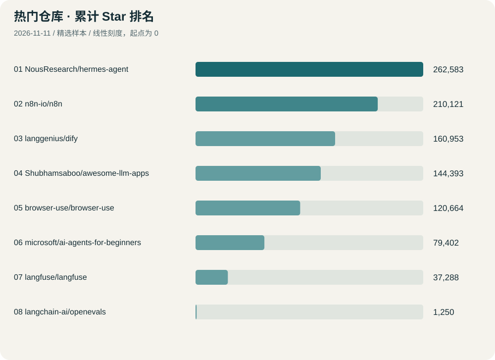
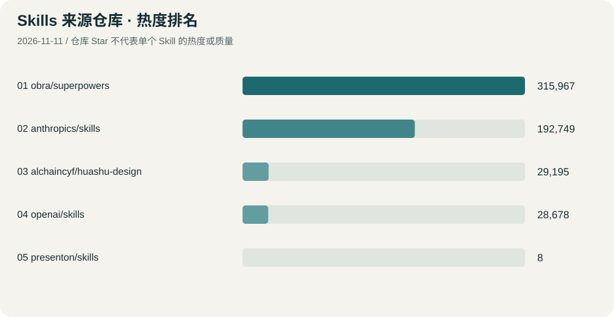

排错与验收
先看 systematic-debugging 和 verification-before-completion，把“找到根因”和“拿出证据”变成固定步骤。
关注 AI Agent、开发效率与自动化。用累计热度筛选项目，再用具体用途判断值不值得花时间。
新专题：PPT 美化与微信回复助手 · 排名、功能与选择建议 →
先看 systematic-debugging 和 verification-before-completion，把“找到根因”和“拿出证据”变成固定步骤。
用微软入门课程建立结构，再从 awesome-llm-apps 选一个最小例子，记录输入、工具和成功标准。
观察 Hermes 的记忆与技能机制，或用 Browser Use 操作一个公开页面。先测一个任务，再考虑长期使用。
按本次样本的累计 Star 降序排列。Star 是受关注程度的线索，不代表质量、近期增速或适合所有任务。

| 排名 | 仓库 / 做了什么 | 累计 Star | 最近活动 | 用途与边界 |
|---|---|---|---|---|
| 01 | NousResearch/hermes-agent 带记忆、工具调用和技能机制的通用 Agent。 | 263,008 | 2026-11-13UTC · 最近推送 | 观察长期任务、记忆和技能如何组合。下一步：先读记忆和技能的实现，再用一个小任务验证。 |
| 02 | n8n-io/n8n 把不同应用串成流程的可视化自动化平台，支持 AI 步骤和代码。 | 210,341 | 2026-11-13UTC · 最近推送 | 可用于资讯收集、表单处理和重复工作。下一步：先画出一个输入到输出的流程，再决定是否搭建。 |
| 03 | microsoft/markitdown 将 PDF、PPT、Word、Excel 等材料转换为便于检索和分析的 Markdown。 | 195,144 | 2026-11-07UTC · 最近推送 | 将公开课件或研究资料整理成可供检索和模型阅读的文本。下一步：选一份公开课件，核对转换后标题、表格与链接是否保留。 |
| 04 | langgenius/dify 搭建 AI 应用、知识库检索和 Agent 工作流的平台。 | 161,067 | 2026-11-13UTC · 最近推送 | 适合快速验证教学助手或知识问答原型。下一步：先用少量公开资料测试问答，记录错误答案。 |
| 05 | Shubhamsaboo/awesome-llm-apps 汇集 AI Agent、技能与检索增强应用的示例代码。 | 144,522 | 2026-11-11UTC · 最近推送 | 可寻找小实验题目，对照工具调用和评测方法。下一步：挑一个最小示例读代码，记录依赖和成功标准。 |
| 06 | browser-use/browser-use 让 AI 通过代码操作浏览器，完成网页上的多步任务。 | 120,865 | 2026-11-12UTC · 最近推送 | 适合研究网页工具调用、执行失败和恢复。下一步：先用无登录的公开网页测试一次导航和提取。 |
| 07 | microsoft/ai-agents-for-beginners 面向初学者的 AI Agent 课程与代码示例。 | 79,524 | 2026-11-07UTC · 最近推送 | 可把 Agent 概念、设计模式与动手练习连起来。下一步：选一课完成示例，并写下输入、工具和验收方式。 |
| 08 | langfuse/langfuse 记录 Agent 的模型调用与执行轨迹，支持成本观察、数据集实验和评测。 | 37,371 | 2026-11-13UTC · 最近推送 | 给 Agent 项目建立可复核的调用记录与评测证据。下一步：先读追踪与数据集评测示例，用无敏感数据的小任务对比两种方案。 |
| 09 | marp-team/marp-cli 将 Markdown 课件转为网页、PDF 或 PowerPoint。 | 3,917 | 2026-09-08UTC · 最近推送 | 适合把重复使用的课程讲稿和版式放进版本控制。下一步：用一份公开讲稿比较 PDF 和 PPTX 导出效果。 |
| 10 | langchain-ai/openevals 为 LLM 应用提供可复用的评估器，支持 Python 和 TypeScript。 | 1,250 | 2026-11-12UTC · 最近推送 | 用少量已知答案检查简洁性或输出质量。下一步：选十条已有输入输出做人工对照，检查评估器是否给出一致判断。 |
没有匹配的仓库。
Skill 是给 Agent 使用的一组任务说明和配套资源。以下按排错、验证、协作、实验与展示用途排序，属于编辑推荐，不是效果测评，也没有单个 Skill 的 Star 统计。
| 推荐顺序 | Skill / 来源 | 做了什么 | 适用场景与条件 |
|---|---|---|---|
| 01 | systematic-debuggingobra/superpowers | 先复现、收集证据、找出根因，再修复问题。 | 排查安装、环境、测试失败时很实用。较强的流程约束，小问题可按任务范围使用。 |
| 02 | verification-before-completionobra/superpowers | 要求完成声明附带最新验证证据。 | 减少“改了代码就说修好了”的错误汇报。可能增加检查步骤；须选择与改动相称的验证。 |
| 03 | gh-fix-ciopenai/skills | 读取 GitHub Actions 失败日志，定位 PR 自动检查失败。 | 适合维护开源 PR 与博客部署。需要 gh 登录及仓库访问；技能包含确认修复方案的步骤。 |
| 04 | gh-address-commentsopenai/skills | 整理 PR 的审阅意见并处理选定评论。 | 帮助跟进开源协作中的审阅反馈。需要 gh 登录；技能会询问要处理哪些意见。 |
| 05 | jupyter-notebookopenai/skills | 通过模板生成和整理可复现的实验或教学笔记本。 | 适合 Agent 评测实验与数据教学。运行需要 Python/Jupyter 依赖；必须区分已执行和仅生成。 |
| 06 | playwrightopenai/skills | 通过浏览器快照、导航和截图执行网页操作。 | 适合验证博客或网页原型的真实界面。依赖 Node/npm 和浏览器；当前脚本使用 shell wrapper，Windows 适配需验证。 |
| 07 | mcp-builderanthropics/skills | 指导构建 MCP 服务，让模型以工具方式访问外部系统。 | 适合学习 Agent 工具接口与错误处理。需要编程和 SDK 环境；迁移到 Codex 时应核对宿主特有工具。 |
| 08 | frontend-designanthropics/skills | 指导网页的版式、字体和视觉风格设计。 | 适合博客、教学页面和项目展示。属于设计指引；不保证可访问性或功能正确，仍需实际检查。 |
| 09 | huashu-designalchaincyf/huashu-design | 用 HTML 设计幻灯片、原型和信息图，提供可编辑 PPTX 导出流程。 | 对比不同视觉方向，制作可继续编辑的演示稿。技能强制先给多个设计方向，会增加交互；完整依赖配套素材和脚本，需检查中文字体与 PPTX 导出保真度。MIT；模型调用可能收费。 |
| 10 | presentonpresenton/skills | 通过 Presenton 的在线 API 生成可编辑 PPTX，也可导出 PDF 和 PNG。 | 适合试做带模板的演示稿，并核对不同导出格式。需要兼容的 Agent、Python 辅助脚本和网络。流程可能上传用户提供的图片，并生成可分享预览链接。仓库为 Apache-2.0，服务额度和费用未核实。 |
没有匹配的 Skill。
下面统计整个来源仓库的累计 Star，不能分摊到单个 Skill。
